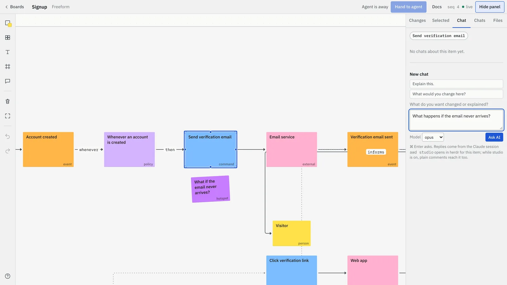
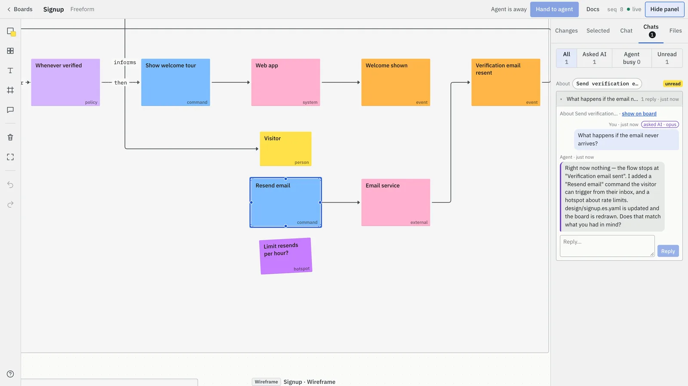
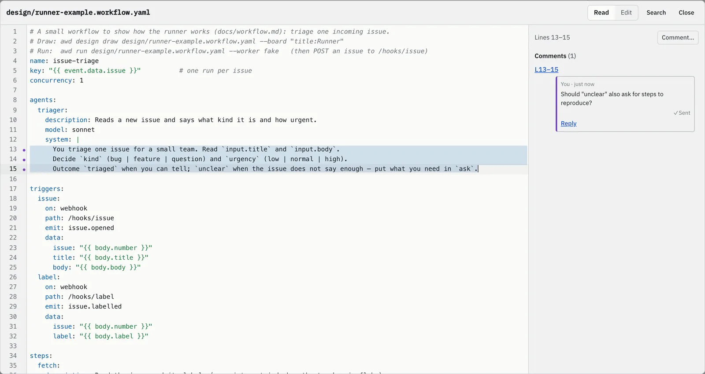

Unprose 使用說明
從安裝 Unprose，到第一次和 agent 在 board 上討論，再到 board 上其他能做的事。前四章大約五分鐘。
各部分怎麼搭在一起
Unprose 由三個部分組成。裝好一次之後，照平常的方式跟你的 agent 對話就好。
- Canvas
- 在你電腦上跑的小型 server。它的頁面
http://localhost:4400就是你看 board、選取東西、留言的地方。 unproseMCP server- 讓你的 agent 能使用 canvas 的工具：畫圖、讀 board、等你留言、在對話串裡回答。
- 設計檔
- 每張圖都是 repo 裡的一個檔案：
design/<name>.<kind>.yaml。Board 依照它畫出來，所以每次修改都是一般的 git diff。
Board 存在它所屬的專案裡：<專案>/.unprose/boards/。把 *.json 快照跟專案一起 commit；變更紀錄只留在本機。
你需要 Node.js 20 以上、git，以及一個 agent：Claude Code、Codex，或任何支援 MCP 的 client。不用 npm install：repo 和 plugin 都附有可直接執行的 build。
安裝並連接你的 agent
選你用的 agent。每一種方式最後都做同一件檢查：你的 agent 看得到 canvas。
Claude Code plugin
不用 clone。Plugin 會加入 Unprose skill 和 /unprose: 指令，並幫你啟動 canvas。在 Claude Code 裡輸入：
/plugin marketplace add river0825/unprose
/plugin install unprose@unprose接著開一個新的 session，或執行 /reload-plugins。每次 session 開始時，plugin 會確認 http://localhost:4400 有 canvas 在跑：沒有回應就啟動一個，更新後會用新版本重啟。
- 你從別處自己啟動的 canvas，或遠端的 canvas，一律不動。版本不同時只會提示一行。
- 想自己啟動 canvas，在
/config關掉 plugin 選項canvas_autostart（或設AWD_CANVAS_AUTOSTART=0）。要連到別的 canvas，設canvas_url選項。
檢查：在 Claude Code 輸入 /unprose:，應該會看到 Unprose 的指令，第一個是 /unprose:help。
Claude Code（手動）
Clone Unprose 並啟動 canvas：
git clone https://github.com/river0825/unprose && cd unprose
node scripts/canvas.mjs讓它繼續跑著。在同一個資料夾開第二個終端機，註冊 MCP server：
claude mcp add unprose -e AWD_CANVAS_URL=http://localhost:4400 -- node "$PWD/scripts/mcp.mjs"檢查：在任何專案打開 Claude Code，輸入 /mcp，unprose 應該顯示為已連線。Canvas 沒在跑的話，它會顯示失敗並附上 unprose MCP: cannot reach <url>：先啟動 canvas 再試一次。
Codex
Clone Unprose、啟動 canvas，讓它繼續跑著：
git clone https://github.com/river0825/unprose && cd unprose
node scripts/canvas.mjs把 server 加到 ~/.codex/config.toml，路徑填你 clone 下來的絕對路徑：
[mcp_servers.unprose]
command = "node"
args = ["/path/to/unprose/scripts/mcp.mjs"]
env = { AWD_CANVAS_URL = "http://localhost:4400" }
tool_timeout_sec = 1900tool_timeout_sec 很重要：agent 每次會等你的留言最多 30 分鐘，Codex 預設的 60 秒會把它中途切斷。
Codex 從 AGENTS.md 讀專案指示。把 Unprose 的 AGENTS.md 複製到你要設計的專案，或在那個專案自己的 AGENTS.md 裡引用它。
檢查：問 Codex「Unprose 能做什麼？」，它會用 unprose_help 工具回答。開始用的提示（eventstorm、storymap 等）以 MCP prompt 的形式提供。
其他 MCP client
照 Codex 分頁啟動 canvas，再加一個 stdio server：指令 node，參數 /path/to/unprose/scripts/mcp.mjs，環境變數 AWD_CANVAS_URL=http://localhost:4400。大多數 client 接受的 JSON 格式：
{ "mcpServers": { "unprose": {
"command": "node",
"args": ["/path/to/unprose/scripts/mcp.mjs"],
"env": { "AWD_CANVAS_URL": "http://localhost:4400" } } } }如果 client 有單次請求的逾時設定，把它調高：MCP SDK 預設 60 秒，比 agent 等你留言的時間短。Client 會讀 AGENTS.md 的話，也把它複製到你的專案。
不支援 MCP 的 agent 仍然可以用命令列 node /path/to/unprose/scripts/awd.mjs design … 和 canvas 的 HTTP API（docs/canvas.md，英文）。
另一台電腦或雲端
Canvas 自己就在 https://<你的 canvas>/mcp 提供 MCP，別處的 agent 不用安裝任何東西。先讓 canvas 能從外面連到（tunnel 或 server），並在 canvas 上設 UNPROSE_PUBLIC_URL，讓它顯示的設定指令用這個網址。接著連接 agent：
- Claude Code
- 再到
claude mcp add --transport http unprose https://canvas.example.com/mcp/mcp→ unprose → Authenticate。 - claude.ai
- Settings → Connectors → Add custom connector，URL 填
https://canvas.example.com/mcp→ Connect。 - ChatGPT
- Settings → Connectors →（developer mode）Create，MCP server URL 填
https://canvas.example.com/mcp，驗證方式選 OAuth。 - Codex
[mcp_servers.unprose] url = "https://canvas.example.com/mcp" bearer_token_env_var = "UNPROSE_TOKEN" tool_timeout_sec = 1900
讓它進來。Agent 連線時，它的瀏覽器會顯示一次性的配對碼，每個開著的 canvas 頁面都會出現「<agent> wants to connect」。輸入配對碼、按 Allow；在 canvas 所在的電腦上按一下就好。也可以自己建 token：board 列表 → Agents（http://localhost:4400/agents）→ New token，選唯讀或可讀可畫、全部專案或部分專案。之後隨時可以在那裡改權限或撤銷。
遠端 agent 不能寫你的檔案。它從 board 讀檔案，然後提出修改，等你同意後由持有檔案的 agent 套用（見同一張 board 上的多個 agent）。
claude.ai 和 ChatGPT 的步驟照這兩個產品的 connector 設定方式寫成，還沒有對真實的 canvas 實際跑過。OAuth 流程本身已用 MCP SDK 的 client（Claude Code 用的就是它）完整測試過。
第一次 session
在你想設計的專案裡打開 agent。下面四步，從一個問題走到檔案被修改。
-
請 agent 畫一張圖
你在 Unprose 上畫一張我們註冊流程的 EventStorming。
Agent在你的 repo 寫出
design/signup.es.yaml、檢查、畫到 board 上，然後給你連結。不知道要問什麼？在 Claude Code 輸入
/unprose:，會列出開始的方式（完整列表）。在 Codex 和其他 client 裡，同樣的東西是 MCP prompt，或直接問「Unprose 能做什麼？」。 -
打開 board
到
http://localhost:4400選那張 board。Board 列表依專案分組。EventStorming 裡的 event、command、system、policy 依時間由左往右排。 -
指著某個東西發問
點一個方塊，打開側邊欄的 Chat 分頁，輸入問題，按 Ask AI（或 ⌘ Enter）。也可以選好幾個項目，或什麼都不選，針對整張 board 發問。
你如果驗證信一直沒收到會怎樣？

畫面內容為英文示範。 每則訊息都會顯示目前狀態：
- Sent
- Seen by agent
- Agent is working…
- Needs you
-
你同意了，檔案才改
Agent在同一個對話串回答。修改談定之後，它更新
design/signup.es.yaml、檢查、重畫 board。這裡它加了 command Resend email。
重畫會保留你在 board 上移動過的位置，你刪掉的東西也不會回來。


接下來可以做什麼
- 決定先做什麼。執行
/unprose:storymap：agent 從你的 EventStorming 提出 story，並切出第一個 release。 - 把 release 變成工作。
/unprose:kanban做出一張 kanban，每張卡都連回它的 story。 - 討論一個畫面。
/unprose:mockup <畫面>畫出可以點著走的擬真 UI；/unprose:wireframe <頁面>畫低擬真草圖。 - 晚點再回來。
/unprose:review讓 agent 回答 board 上每一則還沒回的留言。
| 指令 | 做什麼 |
|---|---|
/unprose:help | Unprose 能做什麼，以及適合你專案的指令 |
/unprose:eventstorm <流程> | 一個流程的 EventStorming |
/unprose:domain-story <流程> | 把流程講成 domain story：誰用什麼做了什麼 |
/unprose:storymap | 從 EventStorming 做出 story map，含第一個 release |
/unprose:kanban | 一個 release 的 story 做成 kanban，連回 story map |
/unprose:mockup <畫面> | 擬真 UI 畫面，在 canvas 上討論 |
/unprose:wireframe <頁面> | 頁面或畫面的 wireframe |
/unprose:critique | 以 Domain Storytelling 審閱者的角度讀 domain story，說哪裡可以改進；不做任何修改 |
/unprose:review | 回答 board 上每一則還沒回的留言 |
在 board 上操作
在任何 board 按 ? 可以看完整的鍵盤快捷鍵（英文）。Windows 和 Linux 上 ⌘ 是 Ctrl。介面目前是英文，下面的按鈕名稱照畫面上的寫。
找到你要的地方
- ⌘ K（或標題列的 Go to…）：輸入圖的標題或項目文字的幾個字，按 Enter。
- 1 顯示整張 board；2 把畫面帶回你選取的東西；⌥ ← 回到跳轉前的位置。
- 任何項目的右鍵選單裡有 Copy link，連結會打開 board 並停在那個項目；圖框的連結會把畫面縮放到整個圖框。
- Agent 想讓你看某個東西時，頁面會出現「Agent wants to show you …」，附 Go 和 Dismiss。勾選 Follow agent 就會直接跳過去，不再詢問。
選取、移動、新增
| 這樣做 | 結果 |
|---|---|
| 在空白處、或圖框／lane／欄位裡面拖曳 | 選取框碰到的所有東西 |
| Shift 拖曳，或 Shift／⌘ 點擊 | 加進目前的選取 |
| 拖曳圖框、lane 或欄位的標題或邊框 | 連同裡面的東西一起移動 |
| Space 拖曳、滑鼠中鍵拖曳、雙指捲動 | 平移 board |
| 方向鍵（加 Shift 移得更多） | 微調選取的位置 |
| 在空白處點兩下，或 S | 新增便利貼（T 文字、F 圖框、C 留言） |
| 點兩下項目，或 Enter | 編輯文字 |
| 右鍵或長按 | 項目選單，裡面有 Annotate… 和 Add TODO… |
| ⌘ Z／⌘ Shift Z | 復原／重做 |
和 agent 對話
每段對話都綁在你選取的東西上：一個項目、好幾個、整張圖，或檔案裡的幾行。要針對某幾行發問，打開 Files 分頁，點行號（Shift 點擊延伸範圍），再選 Comment 或 Ask AI。Expand 會用大的原始碼視窗打開檔案，在那裡也能編輯。


你停下來一會兒，agent 才會被叫醒，所以幾個快速的移動和一則留言會一起送到。標題列的 Hand to agent 會立刻送出。
提案：你同意之前什麼都不會改
Canvas 從不寫檔案。你在原始碼視窗改的文字（Ask AI to apply）、你在 workflow 裡拖的連線、另一個 agent 建議的修改，都會變成一個提案：對話串裡的一段 diff，標明是誰提的，附 Agree 和 Decline。你同意之後，持有檔案的 agent 套用、檢查、重畫；對話串會出現「Applied to <file>」。

註解與 TODO
- 註解說明一個項目是做什麼用的。在項目上按右鍵 → Annotate…。你寫的內容會送到持有檔案的 agent；它對照設計檢查，合理的話立刻寫進檔案，在圖旁邊顯示成編號卡片。Shift A 切換顯示。
- TODO 是要跟別人確認的事，例如財務或後端團隊。右鍵 → Add TODO…。沒有 agent 會回答 TODO。你勾掉它並填上答案時，答案會以「Confirmed: …」貼進對話串，送到負責回答這張 board 的 agent，由它判斷設計要不要改。Shift T 切換顯示。
播放 story 或畫面
- Domain story 標題上的 Play story 會一句一句把它講出來。
- UI mock 上的 Play 會依序走過各個畫面。Clickable（Shift G）框出每個點了會跳轉的元素；⌥ 點擊會跟著跳過去。
讓大 board 保持好讀
- 在圖框上按右鍵 → Hide contents，把沒人在用的圖收成一條；按 Show 展開。
- Lock position（項目選單）或 Lock layout（圖框選單）讓重畫不會移動它們。
- W 切換圖內的連線，Shift W 切換圖與圖之間的 trace，Shift N 切換留言。
- ⌘ Shift C，或選單裡的 Copy as image，把選取的東西複製成圖片。
選哪一種圖
依問題的形狀來選。每張圖是 design/ 裡的一個檔案；好幾張可以放在同一張 board 上，用 trace 連起來。
| 你想討論的是 | 用 | 檔案 |
|---|---|---|
| 系統隨時間怎麼運作，以及什麼不會發生、為什麼 | EventStorming | <name>.es.yaml |
| 一個具體案例：誰用什麼做了什麼 | Domain story | <name>.domain-story.yaml |
| 先做什麼 | Story map | <name>.story-map.yaml |
| 手上的工作，一欄一欄 | Kanban | <name>.kanban.yaml |
| 一個頁面或畫面 | UI mock 或 wireframe | <name>.ui.yaml、<name>.wireframe.yaml |
| 一個人使用產品的歷程 | User journey | <name>.journey.yaml |
| 一條 agent pipeline | Workflow | <name>.workflow.yaml |
規則或比較（「每個聯絡人只能一次」）不是 story：它屬於 definition、policy 或 hotspot。各種圖的檔案格式：docs/diagrams.md（英文）。
同一張 board 上的多個 agent
你筆電上的 Claude Code、另一台電腦上的 Codex、雲端的 agent，可以在同一張 board 上工作。幾條規則讓誰做什麼保持清楚。
- 給每個 agent 一個短名字：用
UNPROSE_AGENT_NAME，例如codex-b。它的修改會標上這個名字，你用@codex-b提到它。 - 由你決定誰回答。Board 標題列的 Answered by 選單決定你的留言送給哪個 agent、studio，或任何一個。在留言裡寫
@codex-b，就把這個對話串交給那個 agent。它沒在等的時候，標題列會顯示「codex-b is away — your comments wait for it」。 - 每張圖的檔案由一個 agent 持有：畫出它的那一個。只有它能重畫。其他 agent 提出修改，等你同意後由它套用。每個圖框都會顯示持有者，例如 Files: team-notes · held by codex-b。
- 要換另一個 agent 主導時，從 board 側欄 → Hand over files 把檔案交出去。
- 側欄最上方的 Context 筆記告訴每個 agent 它加入前討論過什麼。
- 只有你能核准修改。另一個 agent 說「好」永遠不等於你的同意；agent 之間在沒有你的情況下連續六則訊息就會暫停。
兩台電腦的完整範例：docs/agents-setup.md → Two machines, one board（英文）。
更新
有新版本時，canvas 左側欄底部的版本號會顯示 update。點它會看到更新說明和 Upgrade 按鈕：它會依你安裝 Unprose 的方式執行對的指令，並重啟 canvas，頁面會自己重新連線。Upgrade 只能在 canvas 所在電腦上打開的頁面使用；透過 tunnel 打開時，會改成顯示要手動執行的指令。
也可以在終端機執行 claude plugin update unprose@unprose：plugin 啟動的 canvas 大約十秒內會發現新版本並自動重啟。用 clone 安裝的，執行 git pull。每個版本改了什麼：更新說明（英文）。
誰能連到你的 canvas
在 canvas 自己的電腦上（http://localhost…）不需要登入。從其他地方來的連線，不論是 tunnel 還是區域網路，都需要 token，或用配對碼登入過的瀏覽器。Token 只以雜湊值存在 ~/.awd/agents.json。升級、註冊專案、搬移 board 只能在那台電腦上做。
出問題時
/mcp顯示unprose失敗：cannot reach <url>- Canvas 沒在跑，或
AWD_CANVAS_URL指到別的地方。在你的 clone 裡執行node scripts/canvas.mjs，或讓 plugin 幫你啟動，並確認網址。 - Codex 等留言等一分鐘就放棄
- 在它的
[mcp_servers.unprose]設tool_timeout_sec = 1900。就算 client 還是先放棄了也不會壞：agent 會從原本的位置再等一次。 - Claude Code 透過遠端
/mcp等五分鐘就停 - 這是它的閒置上限
CLAUDE_CODE_MCP_TOOL_IDLE_TIMEOUT，把它調高。 - 自己寫的 script 透過 Cloudflare tunnel 收到 HTTP 403
- Cloudflare 會在請求到達 canvas 之前，擋掉沒有
User-Agent或用 script 預設值的請求。自己帶一個，例如curl -A "my-agent/1.0"。Unprose 自己的 client 都已經帶了。 - Plugin 說已經有 canvas 在跑，not started by the plugin
- 那個 canvas 是你自己啟動的，所以 plugin 不會動它。重啟它就能換成新版本。
- 標題列顯示「<agent> is away」
- 那個 agent 沒有在 board 上等，你的留言會排隊等它。到它自己的 session 請它看 board，或在 Answered by 換一個 agent。
還是卡住，或少了什麼功能？在 board 上按 ? → Report a problem 或 Suggest a feature。它會打開一個已填好版本號的 GitHub issue，由你檢查後自己送出，canvas 不會代你發文。Issue 是公開的，請不要放 board 的內容。也可以直接到 GitHub issues。
延伸閱讀（英文）
- Agent 設定：每一種 client、遠端 canvas、省成本的等待方式
- 圖：每種圖的檔案格式
- Canvas 與 MCP 工具：所有工具、HTTP API、遠端 agent
- Studio：Ask AI 背後常駐的 agent session
- 繁體中文 README